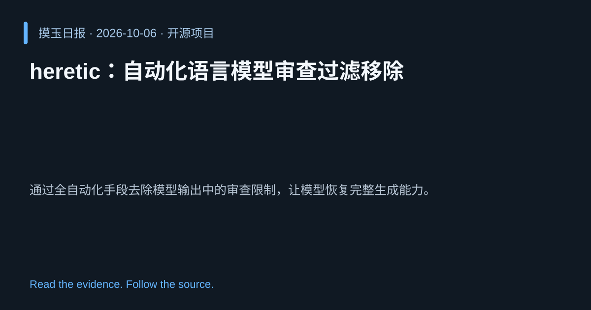

2026-10-06 · Asia/Shanghai · 开源项目 · #6
heretic：自动化语言模型审查过滤移除
p-e-w/heretic
通过全自动化手段去除模型输出中的审查限制，让模型恢复完整生成能力。
为什么值得关注
为研究者和开发者提供更自由的模型输出，便于评估和创新而不受审查层限制。
- 无需人工干预，自动检测并删除审查内容。
- Python 实现，可直接集成至现有模型推理管道。

热度 47.7 / 100；排名与评分保留该期记录。
2026-10-06 · Asia/Shanghai · 开源项目 · #6
p-e-w/heretic
通过全自动化手段去除模型输出中的审查限制，让模型恢复完整生成能力。
为研究者和开发者提供更自由的模型输出，便于评估和创新而不受审查层限制。

热度 47.7 / 100；排名与评分保留该期记录。